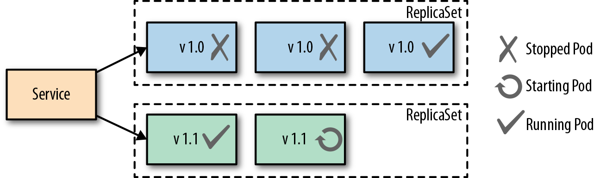
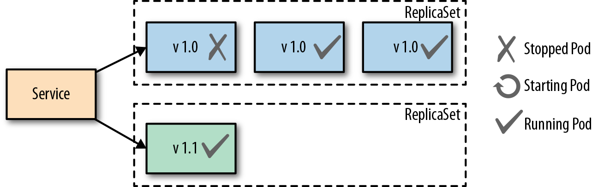

Concepts in Container Orchestration
Declarative Deployment Pattern
With a growing number of microservices, reliance on an updating process for the services has become ever more important. Upgrading services is usually accompanied with some downtime for users or an increase in resource usage. Both of these can lead to an error effecting the performance of the application making the release process a bottleneck.
A way to combat this issue in Kubernetes is through the use of Deployments. There are different approaches to the updating process that we will cover below. Any of these approaches can be put to use in order to save time for developers during their release cycles which can last from a few minutes to a few months.
Rolling Deployment
A Rolling Deployment ensures that there is no downtime during the update process. Kubernetes creates a new ReplicaSet for the new version of the service to be rolled out. From there Kubernetes creates set of pods of the new version while leaving the old pods running. Once the new pods are all up and running they will replace the old pods and become the primary pods users access.

The upside to this approach is that there is no downtime and the deployment is handled by kubernetes through a deployment like the one below. The downside is with two sets of pods running at one time there is a higher usage of resources that may lead to performance issues for users.
Fixed Deployment
A Fixed Deployment uses the Recreate strategy which sets the maxUnavailable setting to the number of declared replicas. This in effect starts the versions of the pods as the old versions are being killed. The starting and stopping of containers does create a little bit of downtime for customers while the starting and stopping is taking place, but the positive side is the users will only have to handle one version at a time.

Blue-Green Release
A Blue-Green Release involves a manual process of creating a second deployment of pods with the newest version of the application running as well as keeping the old version of pods running in the cluster. Once the new pods are up and running properly the administrator shifts the traffic over to the new pods. Below is a diagram showing both versions up and running with the traffic going to the newer (green) pods.

The downfall to this approach is the use of resources with two separate groups of pods running at the same time which could cause performance issues or complications. However, the advantage of this approach is users only experience one version at a time and it's easy to quickly switch back to the old version with no downtime if an issue arises with the newer version.
Canary Release
A Canary Release involves only standing up one pod of the new application code and shifting only a limited amount of new users traffic to that pod. This approach reduces the number of people exposed to the new service allowing the administrator to see how the new version is performing. Once the team feels comfortable with the performance of the new service then more pods can be stood up to replace the old pods. An advantage to this approach is no downtime with any of the services as the new service is being scaled.

Health Probe Pattern
The Health Probe pattern revolves the health of applications being communicated to Kubernetes. To be fully-automatable, cloud-applications must be highly observable in order for Kubernetes to know which applications are up and ready to receive traffic and which cannot. Kubernetes can use that information for traffic direction, self-healing, and to achieve the desired state of the application.
Process Health Checks
The simplest health check in kubernetes is the Process Health Check. Kubernetes simply probes the application's processes to see if they are running or not. The process check tells kubernetes when a process for an application needs to be restarted or shut down in the case of a failure.
Liveness Probes
A Liveness Probe is performed by the Kubernetes Kubelet agent and asks the container to confirm it's health. A simple process check can return that the container is healthy, but the container to users may not be performing correctly. The liveness probe addresses this issue but asking the container for its health from outside of the container itself. If a failure is found it may require that the container be restarted to get back to normal health. A liveness probe can perform the following actions to check health:
- HTTP GET and expects a success which is code 200-399.
- A TCP Socket Probe and expects a successful connection.
- A Exec Probe which executes a command and expects a successful exit code (0).
The action chosen to be performed for testing depends on the nature of the application and which action fits best. Always keep in mind that a failing health check results in a restart of the container from Kubernetes, so make sure the right health check is in place if the underlying issue can't be fixed.
Readiness Probes
A Readiness Probe is very similar to a Liveness probe, but the resulting action to a failed Readiness probe is different. When a liveness probe fails the container is restarted and, in some scenarios, a simple restart won't fix the issue, which is where a readiness probe comes in. A failed readiness probe won't restart the container but will disconnect it from the traffic endpoint. Removing a container from traffic allows it to get up and running smoothly before being tossed into service unready to handle requests from users. Readiness probes give an application time to catch up and make itself ready again to handle more traffic versus shutting down completely and simply creating a new pod. In most cases, liveness and readiness probes are run together on the same application to make sure that the container has time to get up and running properly as well as stays healthy enough to handle the traffic.
Managed Lifecycle Pattern
The Managed Lifecycle pattern describes how containers need to adapt their lifecycles based on the events that are communicated from a managing platform such as Kubernetes. Containers do not have control of their own lifecycles. It's the managing platforms that allow them to live or die, get traffic or have none, etc. This pattern covers how the different events can affect those lifecycle decisions.
SIGTERM
The SIGTERM is a signal that is sent from the managing platform to a container or pod that instructs the pod or container to shutdown or restart. This signal can be sent due to a failed liveness test or a failure inside the container. SIGKILL allows the container to cleaning and properly shut itself down versus SIGKILL, which we will get to next. Once received, the application will shutdown as quickly as it can, allowing other processes to stop properly and cleaning up other files. Each application will have a different shutdown time based on the tasks needed to be done.
SIGKILL
SIGKILL is a signal sent to a container or pod forcing it to shutdown. A SIGKILL is normally sent after the SIGTERM signal. There is a default 30 second grace period between the time that SIGTERM is sent to the application and SIGKILL is sent. The grace period can be adjusted for each pod using the .spec.terminationGracePeriodSeconds field. The overall goal for containerized applications should be aimed to have designed and implemented quick startup and shutdown operations.
postStart
The postStart hook is a command that is run after the creation of a container and begins asynchronously with the container's primary process. PostStart is put in place in order to give the container time to warm up and check itself during startup. During the postStart loop the container will be labeled in "pending" mode in kubernetes while running through it's initial processes. If the postStart function errors out it will do so with a nonzero exit code and the container process will be killed by Kubernetes. Careful planning must be done when deciding what logic goes into the postStart function because if it fails the container will also fail to start. Both postStart and preStop have two handler types that they run:
-
exec: Runs a command directly in the container.
-
httpGet: Executes an HTTP GET request against an opened port on the pod container.
preStop
The preStop hook is a call that blocks a container from terminating too quickly and makes sure the container has a graceful shutdown. The preStop call must finish before the container is deleted by the container runtime. The preStop signal does not stop the container from being deleted completely, it is only an alternative to a SIGTERM signal for a graceful shutdown.